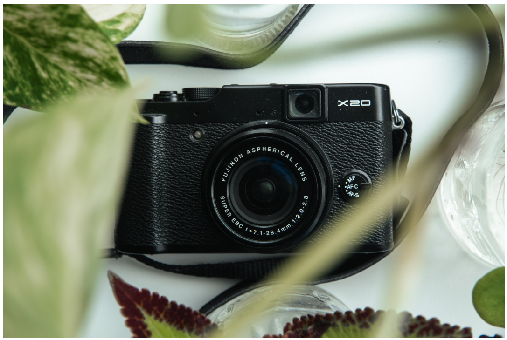

OKTOBER 2023
Kend dit kamera

INTRO
I denne måned skal det hele handle om at lære sit kamera at kende. Jeg vil anbefale at lære at skyde med manuel fordi man får meget mere ud af sit kamera og på den måde kan få præcis det billede man gerne vil have. Det er sådan at ens kamera ikke er lige så klog som en selv og kameraet ved altså ikke om du er ved at tage et portræt eller et landskabsfotografi. Derfor er det godt at bruge manuel så du selv kan styre om baggrunden skal være sløret eller knivskarp. Der skulle gerne være en drejeskive på toppen af dit kamera hvor du kan dreje den hen til bogstavet “M” og så går vi i gang!
LUKKETID
Lukketid kontrollerer så mange aspekter af fotografi. Hvis du vil tage et billede af en fodboldspiller der løber rigtig hurtigt og du vil fange det billede og være sikker på at det ikke er sløret, så skal du have en høj lukketid så lukkeren åbner og lukker rigtig hurtigt. Men hvad er lukkeren? Lukkeren er en mekanisme, der styrer hvor længe lyset når billedsensoren. Den påvirker eksponering, bevægelseseffekter og dybdeskarphed i fotografier. Lukkehastigheden måles i sekunder eller brøkdelen af et sekund, som f.eks. 1/1000 sekund eller 1 sekund. Det betyder altså, at hvis du har en lynhurtig lukketid så fryser du tid og sted, alt står skarpt, er din lukketid langsommere, får du f.eks. 1 sekunds bevægelse på dit billede, men jo kortere lukketid, jo mindre lys får du altså også med... HUSK hvis lukketiden ligepludselig er meget lang, kan det blive nødvendigt med et stativ fordi man ikke selv kan holde kameraet så stille i lang tid. Hurtig lukketid: mørkere billede Langsom lukketid: lysere billede
BLÆNDE
Blænden har to funktioner, kan man sige. Den lukker en masse lys ind, så man kan få lys nok til sine billeder med hurtig lukketid. Men den ændrer altså også hvad der sker med baggrunden. Hvis du tager et billede af en landskab så vil du gerne have alle detaljerne med og så skal man altså have blænden sat på F8, F11 eller F22 eller så højt at du er sikker på at du får alle detaljerne med. Hvis du i stedet tager et portræt så skal du gerne sætte blænden så lavt som muligt, f.eks. F1.4 så du lukke en maaasse lys ind og med en hurtig lukketid også får du altså et lækkert portræt med en sløret baggrund. Og noget man lige skal huske med blænde er at tallene fungere omvendt. F2 = større blænde og F14 = mindre blænde. Det skal man lige vende sig til.
ISO
ISO skal ses som værende falsk/kunstigt lys. ISO bruges altså til at tilføje kunstigt lys til et billede. En lav ISO (f.eks. ISO 100) er bedst når der er meget lys - midt på dagen.Høj ISO (f.eks. ISO 1600) kan blive nødvendig når det bliver mørkt, men det kan gøre billedet mere grynet. En lav ISO giver et skarpere billede, men kræver mere naturligt lys. En høj ISO giver dig mulighed for at fotografere f.eks. om natten, men dit billede kan blive mere grynet af det kunstige lys og derfor gøre selve kvaliteten af billedet lavere. Altså, når du tager portrætter, så skal du tænke lavt F-tal (blænde) og høj lukketid f.eks. 1/200s Når det gælder landskab: Højt F-tal og langsommere lukketid. Det er ikke nødvendigvis dårligt at ISOen er lidt for høj og billedet bliver lidt grynet, hvis det er det udtryk man gerne vil have. Det kan give billedet et lidt vintage look.
ØVELSE
1. Tag nogle portrætter/produktfotos af ting i dit hjem eller af dine venner. Øv dig og leg med
indstillingerne.
2. Gå en tur udenfor i naturen eller generelt åbne steder. Tag et stativ med hvis du har et og leg
med at tage lidt billeder af landskabet.